La ville de Montréal est bien connue pour son côté cosmopolite,
son street-art et l’engouement que les français expatriés ont pour
elle! Au cours des quelques mois que j'ai passé à travailler là-bas,
j'ai expérimeté une ville dynamique, je
vous en donne mes coups de cœur.
Tout d’abord, je dois vous dire que j’ai vécu 3 mois à Montréal. Et je suis
tombée raide dingue de cette ville et de cette façon de vivre et de ses habitants.
Oui, car il ne faut pas se dire que Montréal, c’est "l’Europe en Amérique".
Ne vous attendez donc pas à voir une ville ressemblant à Paris, Lyon ou
Marseille. Venons-en au centre du sujet : Que visiter à Montréal ? Je vais
vous présenter une liste non exhaustive de ce qu’il faudrait voir lors de
votre voyage dans la ville Canadienne qui reçoit le plus de français par an.
Découvrez les lieux mytiques,
les plats typiques de Montréal pour vous satisfaire tout au
long de l'année.


MONTRÉAL
ITINÉRAIRE MONT-ROYAL ¤ SAINTE CATHERINE ¤ PLACE DES ARTS
Les lieux à ne pas manquer ↬
le Plateau, la rue Saint Denis, le Parc Mont-Royal, la rue Sainte-Catherine et le Village, la Place des Arts, l’université McGill et le Musée Redpath, la Place d'Armes, le Marché Jean-Talon, pour finir une petite ballade à vélo...
Le Plateau Mont-Royal
Ah, le Plateau Mont-Royal. Les français y sont très nombreux, vous ne
serez donc pas dépaysés de l’accent la-bas! Ne vous demandez pas
pourquoi il y autant de français la-bas, c’est simplement parce qu’il
s’agit de quartiers vraiment atypiques, au style artiste, bohème. On
pourrait comparer ça à un petit Aix-en-Provence. Vous y trouverez votre
bonheur.
Le Plateau regorge de petits restaurants, bars et autres magasins
qui vous donneront envie d’y rester plus longtemps qu’une simple balade,
comme ces milliers de français qui y ont emménagés. N’oubliez pas de vous
rendre au Parc La Fontaine, un des plus grands parcs de Montréal qui aurait
été fait par la personne qui a créé Central Park, rien que ca. Et, bien sûr,
vous pourrez y faire du patinage l’hiver. Oui, vous l’avez compris, on ne fait
pas rien à Montréal l’hiver malgré les températures glaciales (-10, -20°!).
Pendant l’été? C’est l’occasion de prendre une bonne bouffée d’air frais!
La rue Saint-Denis
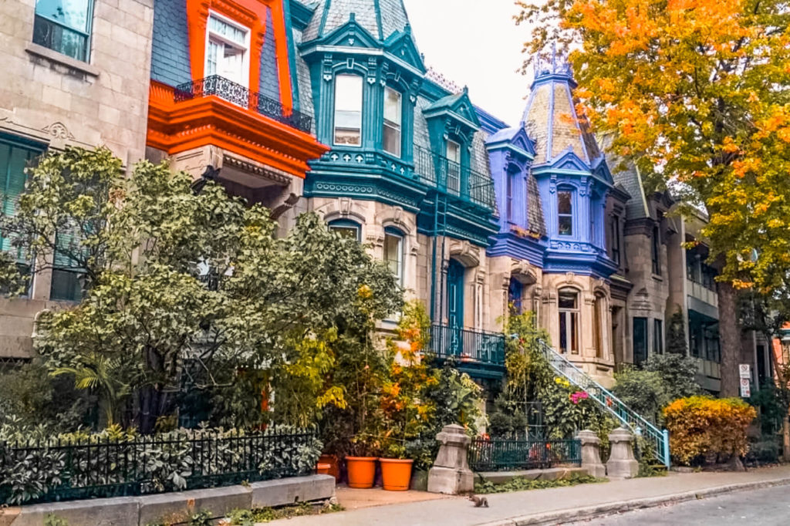La célèbre rue Saint Denis fait parties des milles merveilles du Plateau Mont-Royal et est un de mes coups de cœur à Montréal! Promenez vous dans ce quartier, et admirer les maisons typiques de Montréal. La rue Saint-Denis regorge de petits cafés et de bars à la devanture attirante. On y trouve aussi des magasins plus pointus et de nombreux tatoueurs.
Le Parc de Mont-Royal
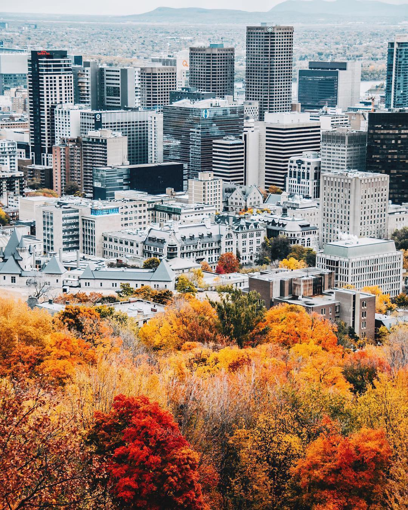 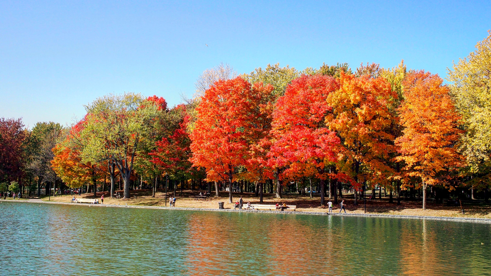En parlant de parc, laissez-moi vous présenter définitivement THE parc de Montréal et son Lac des Castors. Tout simplement immense, vous pourrez y faire à peu près ce que vous voudrez : Courir, bien entendu, ou encore profiter des tam-tam du dimanche. Les tam-tam, qu’est-ce que c’est? Simplement une communauté de musiciens qui se rassemblent tous les dimanches depuis des années au Parc Mont-Royal afin de faire de la musique… Et ça fait danser! Des dizaines de personnes dansent les unes autour des autres. Pour les amoureux des animaux, vous trouverez de très nombreux écureuils dans ce parc. Le parc Mont-Royal vous permet aussi d’avoir la meilleure vue sur la ville. N’oubliez donc pas votre appareil photo pour immortaliser la skyline de Montréal.
La rue Sainte-Catherine et le Village
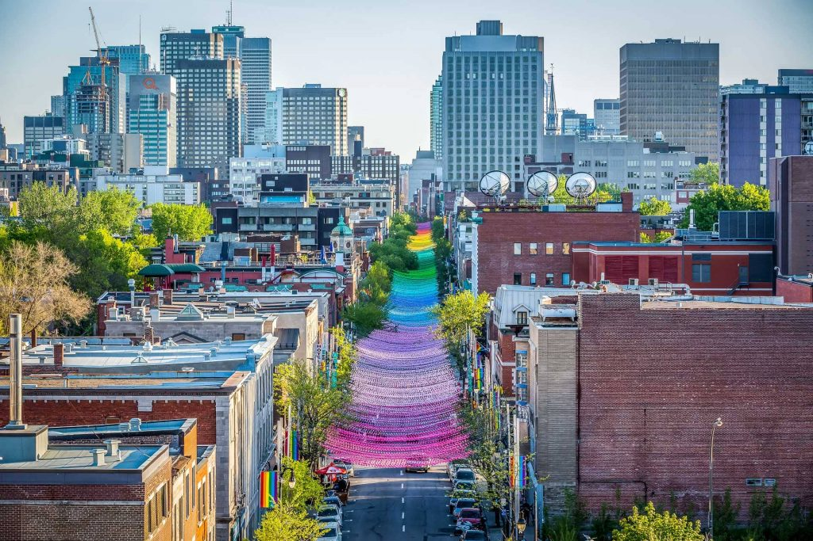Plus longue rue de Montréal, elle s'habille de centaines de guirlandes de couleurs tous les mois de mai et cela durant tout l'été. Elle fait partie du quartier gay de Montréal, autrement appelé le Village, qui n’est rien de plus que le plus grand quartier gay du monde. Il vous proposera de nombreux endroits pour "magaziner" (faire du shopping, bien sûr!). D’ailleurs, pourquoi pas se rendre dans la Ville Souterraine? Attention, beaucoup de personnes s’attendent à voir une vraie ville sous la terre, puisque Montréal est aussi la ville souterraine la plus grande du monde... En fait, vous y trouverez surtout des magasins. Preuve en est, plus de un magasin sur dix est sous la terre dans cette ville! A voir donc.
La Place des Arts
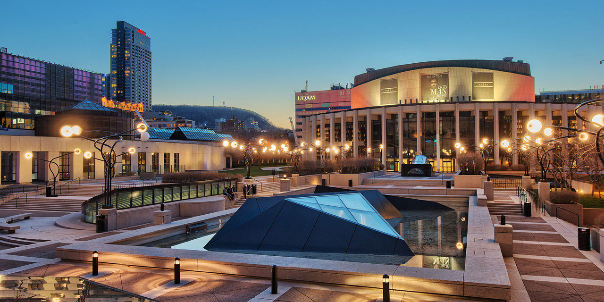 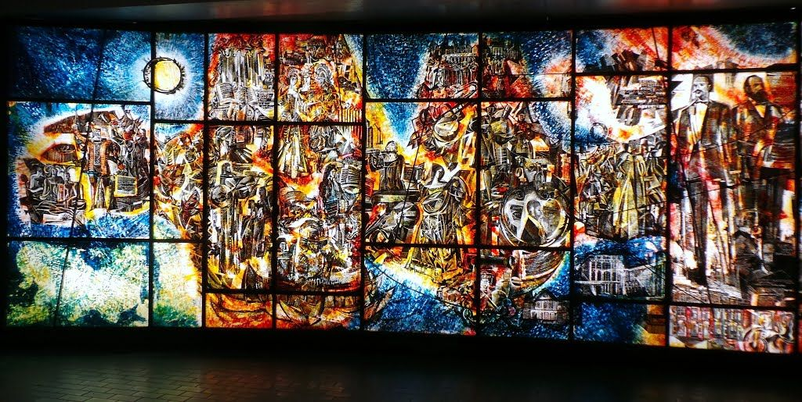Avec l'arrivée de l'été et son climat chaud, la ville se transforme. Le moment parfait pour découvrir la Place des Arts, qui porte très bien son nom. Vous y trouverez de très nombreux festivals : Les Francofolies, le Festival International de Jazz, le Festival Juste Pour Rire... Vous en aurez pour tous les goûts ! Bien sûr, toutes ces activités proposées sont gratuites. D'ailleurs le spectacle commence dès l'arrivée dans le métro, paintures et mosaiques posées dans toute la station, vous ne pourrez pas vous tromper. Bref, un pur bonheur.
L’Université McGill et le Musée Redpath
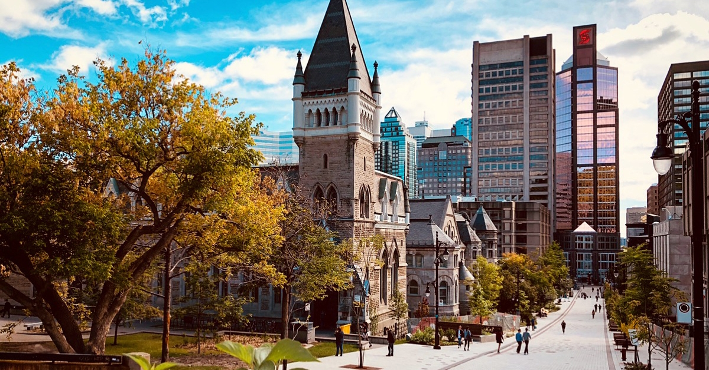 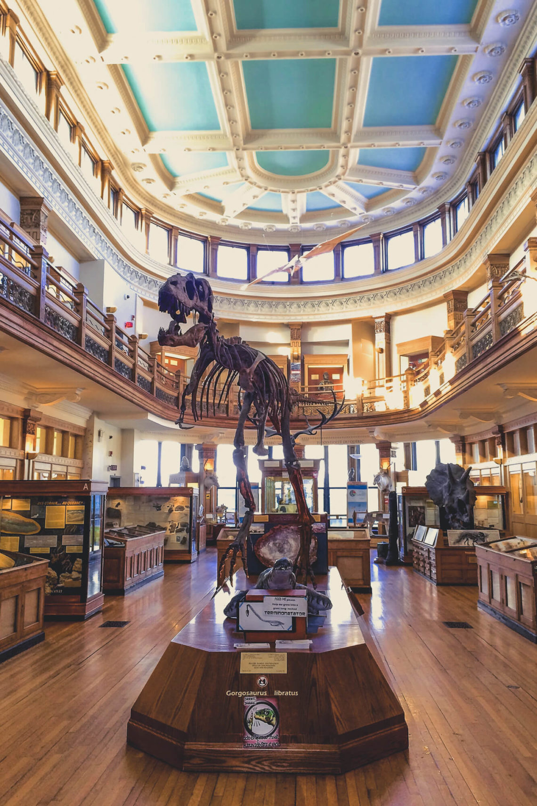En matière de vieilles pierres, le Canada ne tient pas la comparaison avec l’Europe. Pourtant, l’Université McGill a cette aura vénérable qui rappelle les universités de Cambridge ou Oxford en Angleterre. L’université se trouve au pied du Mont-Royal et ses briques rouges tranchent joliment avec le vert de la colline. L’université abrite également le Musée Redpath, un petit musée d’histoire naturelle. Malgré sa petite taille, il regorge de pièces plus intéressantes les unes que les autres, des squelettes aux statues en passant par les pierres.
La Place d'Armes
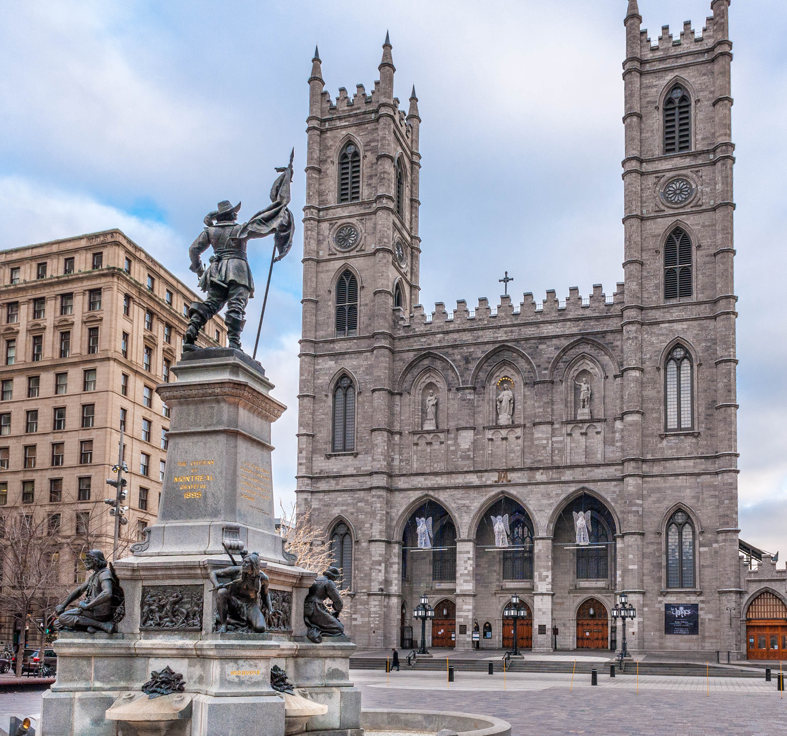Visite incontournable de la ville, la Place d’Armes regroupe différents monuments. On y trouve la belle Basilique Notre-Dame et le séminaire Saint-Sulpice. Un magnifique bâtiment du XIXème siècle accueille la Banque de Montréal, la plus vieille du Canada. On y trouve également le plus vieux gratte-ciel (8 étages) de Montréal et son antique ascenseur.
Le Marché Jean-Talon
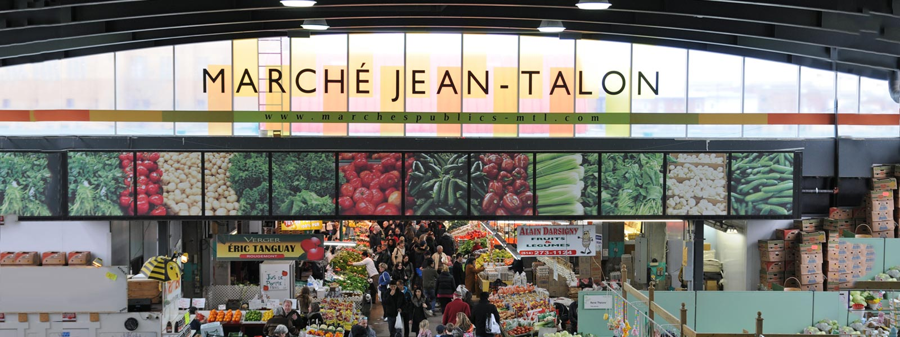Le marché Jean-Talon est l’un des nombreux marchés que la ville de Montréal abrite. Plus qu’un lien où s’approvisionner, c’est une vraie activité à laquelle il vaut mieux consacrer la matinée. Flânez entre les étals de fruits et de légumes, après un petit arrêt à la fromagerie. N’hésitez pas à profiter des dégustations gratuites à travers le marché! À l’approche du déjeuner, testez l’un des food-trucks ou arrêtez-vous à la bagelerie du coin, O’Bagel.
Une ballade à vélo vous tente ?
Pour l’été, le Canal Lachine : on peut y louer des vélos et pédaler le long du canal depuis le Vieux Port jusqu’à l’île René-Levesque, avec un point de vue magnifique sur le Lac Saint-Louis qui borde l’île de Montréal. C’est vraiment dépaysant de se retrouver face à cet immense lac alors que moins d’une heure avant on était en plein centre de Montréal. Et pour compléter la journée, on peut marcher jusqu’à l’oratoire Saint-Joseph pour observer le coucher de soleil depuis en haut.
Ce que vous devez gouter ↬
le sandwich à la viande fumée, les gnocchi, les bagels, les glaces, la poutine, les patates à l'ail, les jus ...
Schwartz's Deli Smoke Meat
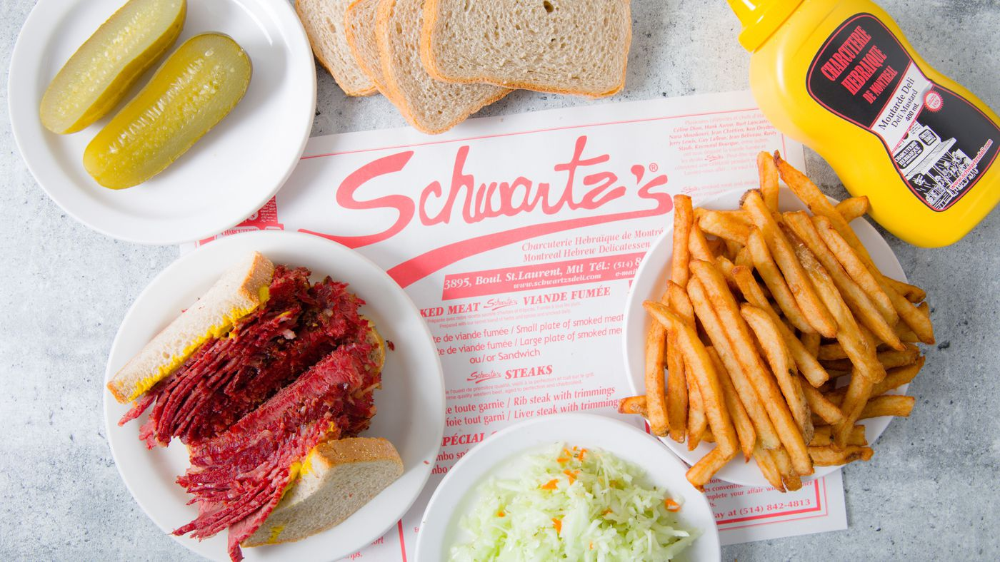Schwartz est peut-être l’élément le plus célèbre de la scène gastronomique montréalaise. Les files d'attente pour cette épicerie emblématique du boulevard St Laurent peuvent être plus longue que quelques pâtés de maisons chaque jour, mais l'attente n'est généralement pas trop longue compte tenu de son expérience culinaire sans fioritures. Le plat principal ici est un sandwich à la viande fumée classique avec des frites, un cornichon et un soda à la cerise noire. Le Schwartz's a une ambiance rétro, et la charcuterie possède une histoire de 80 ans, reconnue par les célébrités, comme un point de repère bien-aimé de la ville.
Les Gnocchi chez Drogheria Fine
Grâce à son emplacement minuscule et sans prétention sur Fairmont, il est facile
d'oublier cette authentique boutique italienne. Mais elle est connu pour faire l'une
des meilleures sauces pour pâtes de Montréal.
Une sauce que vous pouvez acheter au pot - ou encore mieux, dans un petit carton de
5$ de gnocchi frais qui bouillonne dans une cuve près de la seule fenêtre de la boutique.
Ajoutez du parmesan et du poivre broyé et savourez ce plat italien réconfortant bien
chaud en vous promenant dans le cœur animé du quartier du Mile End.
L'Original Faimount Bagel
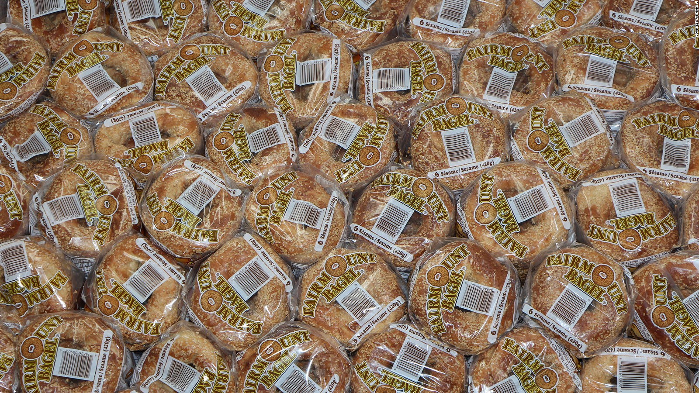Situé juste à côté de Drogheria Fine, vous trouverez Fairmont Bagel, la moitié des rivalités alimentaires les plus anciennes à Montréal. Bien sûr, les bagels de style montréalais sont un incontournable pendant que vous êtes en ville, meilleurs lorsqu'ils sont encore chauds. L'endroit est confortable et n'a rien d'extraordinaire; les murs sont tapissés de bagels ensachés, et derrière le comptoir, vous pouvez regarder les bagels cuits frais dans un grand poêle à bois.
Boulangerie St Viateur Bagel
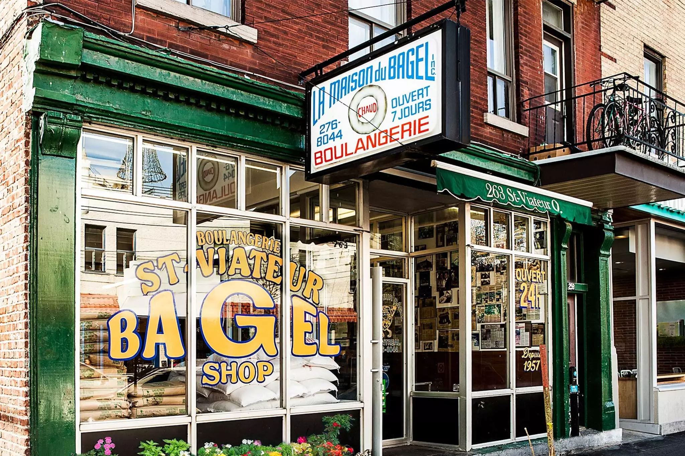Vous voudrez également essayer le concurrent de la rivalité des bagels à la montréalaise en vous rendant à la boutique de bagels de St Viateur à proximité et décider par vous-même des bagels frais roulés à la main que vous préférez. la boulangerie est ouveret 24h/24.
Les glaces chez Kem CoBa
À deux pas du Fairmont Bagels et de Drogheria Fine, Kem CoBa a souvent des files d'attente qui s'étendent le long du pâté de maisons et au coin de la rue pendant les mois de printemps et d'été. La plupart des gens viennent pour une tasse ou un cornet de glace ou de sorbet artisanal, mais il propose également du chocolat et des pâtisseries. Les desserts glacés ne contiennent ni conservateurs ni ingrédients artificiels, et vous pouvez choisir des desserts en cuillère ou en cornet dans des saveurs créatives et maison.
Les glaces chez Ripples
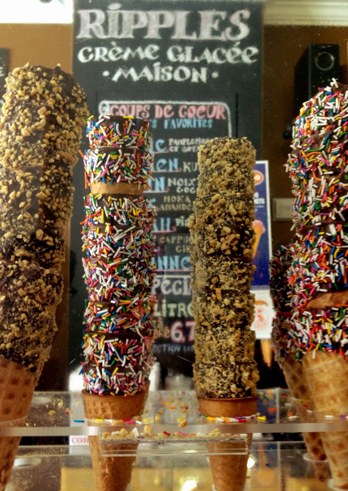Situé sur le boulevard St Laurent, aussi appelé «The Main», le magasin de crème glacée Ripples existe depuis plus de 15 ans. Le propriétaire Richard Bernett a commencé par fabriquer de la crème glacée à la maison et est tombé amoureux de l'artisanat, et maintenant sa petite boutique propose de la crème glacée, du sorbet et du yogourt glacé dans plus de 30 saveurs - y compris goyave-pamplemousse, halavah, fudge moka-amande et thé chai.
La Poutine à la Banquise
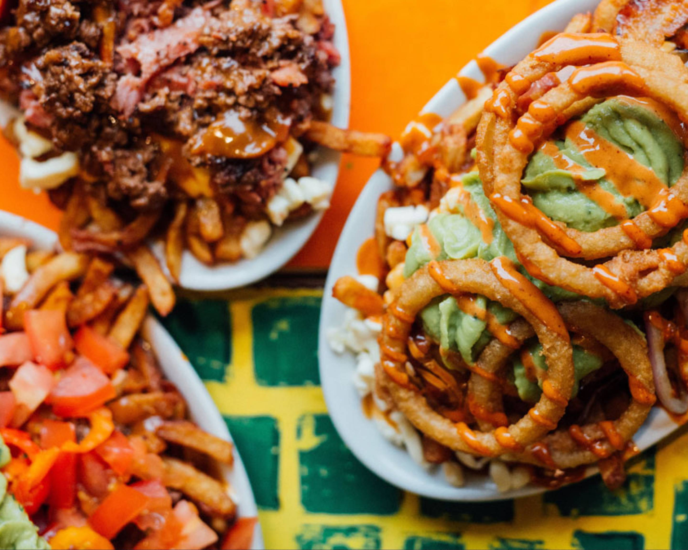Malgré sa combinaison lourde de frites, de sauce et de fromage, la poutine est reconnue comme l'un des plats québécois les plus emblématiques. Il existe de nombreuses chaînes qui servent ce classique de la restauration rapide locale, mais La Banquise sur le Plateau est l'un des endroits les plus populaires de la ville. Depuis 1968, ce snack-bar sert plus de 30 sortes de poutine 24h/24. Les variétés incluent La Mexicaine, La Reggae, La Santorini, La Sud-Ouest et La Véganomane, avec du fromage végétalien et une sauce végétalienne.
La Poutine fois gras Au Pied de Cochon
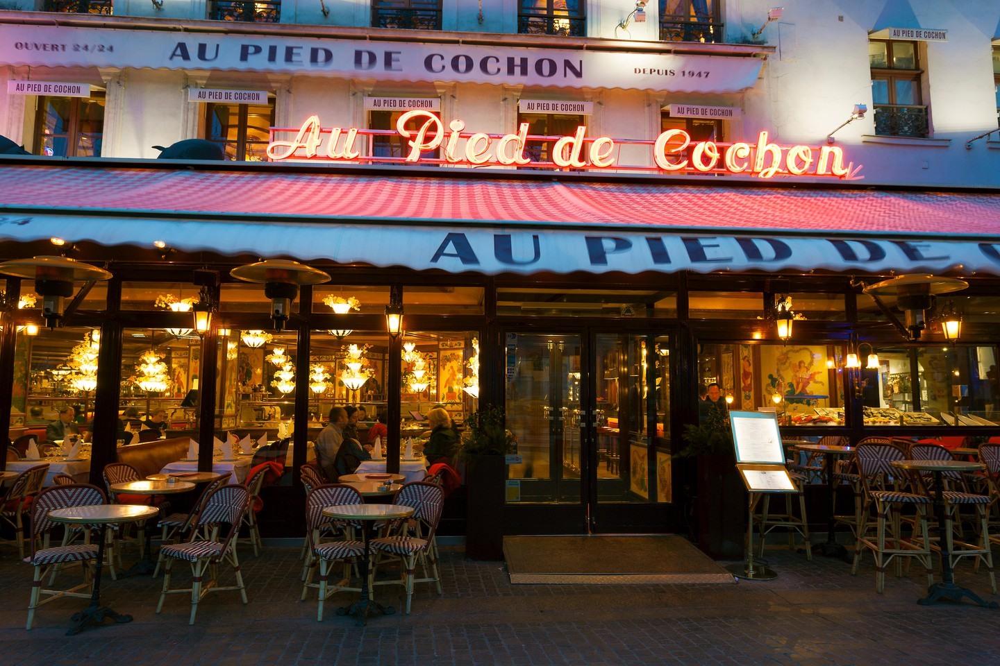Faites passer votre amour pour la poutine au niveau supérieur et essayez une variante de foie gras dans l’un des restaurants les plus célèbres du quartier du Plateau à Montréal. Au Pied du Cochon est connu pour ses interprétations lourdes et décadentes des plats traditionnels québécois, et sa poutine au foie gras ne fait pas exception. Le fromage en grains et les frites sont recouverts d'une généreuse portion de sauce au foie gras, et garnis d'une pincée supplémentaire du délicieux pâté. Vous n’aurez plus de place pour le dessert.
Pommes de terre à l'ail chez Boustan
Depuis 1986, Boustan sert de la restauration rapide libano-canadienne la plus populaire de la ville. L'emplacement d'origine de la rue Crescent a attiré des célébrités canadiennes telles que Leonard Cohen, l'ancien premier ministre Pierre Trudeau et son fils, l'actuel premier ministre Justin Trudeau et des joueurs de l'équipe de hockey des Canadiens de Montréal - entre autres. Il y a maintenant plusieurs endroits, mais les pommes de terre servies avec une sauce épaisse à l'ail restent un plat réconfortant local favoris.
Jus au Gibeau Orange Julep

Facilement identifiable comme l'orange géante sur les toits de Montréal, Gibeau Orange Julep a une longue histoire qui couvre plusieurs décennies. Elle incarne l'ambiance d'un dîner des années 1960 et attire des voitures classiques de près et de loin pour des rassemblements hebdomadaires dans le parking environnant. La boisson classique du lieu est le Gibeau Orange Julep crémeux, parfait pour savourer un après-midi d'été chaud avec un hot-dog et des frites.
En dehors de Montreal
Et si vous decidez de mettre les pieds hors de Montréal, il y a encore tout plein de bonnes chose à découvrir, comme la tire sur la neige que vous retrouver souvent dans les cabannes à sucre. Une expérience à découvrir et à faire soi-même.
Vous l’avez compris, Montréal regorge d’endroits où se rendre, où il faut se balader. Cette ville est marquante, de par sa cosmopolité mais aussi de par son identité unique. Ne vous étonnez pas si vous tombez sous le charme très rapidement. Bon voyage dans la métropole québécoise !
Vous rêvez de partir à Montréal, contactez-moi pour en discuter :